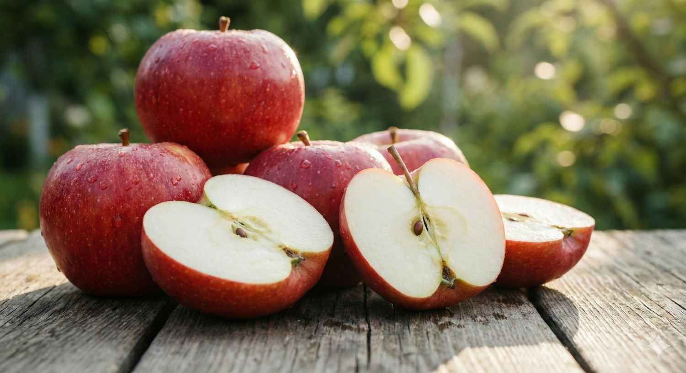

26 Februari 2024 | Admin Apple Sun

Foto: Deretan apel segar siap konsumsi hasil panen kebun Batu.
Kota Batu telah lama dikenal sebagai penghasil apel terbesar di Indonesia. Namun, tahukah Anda bahwa ada banyak jenis apel dengan karakteristik rasa yang berbeda-beda?
Apel Manalagi: Si Manis Primadona
Apel Manalagi adalah varietas yang paling banyak dicari oleh wisatawan lokal. Memiliki warna kulit hijau kekuningan yang khas, aroma yang sangat harum layaknya wangi bunga, dan rasa manis yang dominan meskipun buahnya belum terlalu matang. Teksturnya cenderung renyah namun sedikit lebih lunak dibandingkan varietas lainnya.
Varietas ini sangat cocok dikonsumsi secara langsung sebagai camilan sehat. Ukurannya yang cenderung kecil hingga sedang membuatnya praktis untuk dibawa bepergian. Di pasar lokal Kota Batu, Apel Manalagi seringkali menjadi pilihan utama untuk dijadikan oleh-oleh karena daya tahannya yang relatif baik setelah dipetik dari pohonnya.
Apel Rome Beauty: Segar & Masam
Berbeda jauh dengan Manalagi, Rome Beauty memiliki kulit berwarna kemerahan dengan sedikit semburat hijau yang estetik. Rasanya cenderung segar dengan tingkat keasaman yang cukup tinggi, memberikan sensasi "meledak" di mulut saat pertama kali digigit. Tekstur daging buahnya sangat renyah dan memiliki banyak kandungan air (juicy).
Karena karakteristik rasanya yang kuat, Rome Beauty sangat cocok untuk dijadikan bahan olahan seperti pai apel, keripik apel, atau jus segar. Kandungan asamnya yang lebih tinggi membantu menjaga keseimbangan rasa saat diolah dengan tambahan gula. Bagi Anda pecinta buah dengan sensasi segar yang membangkitkan semangat, varietas ini wajib masuk dalam daftar petik Anda.
"Makan satu apel sehari bukan hanya menjaga kesehatan fisik, tapi juga menghubungkan kita dengan kekayaan alam tanah air."

Rasakan sensasi memetik apel langsung dari pohonnya di program edukasi kami!
Apel Anna: Kombinasi Sempurna
Apel Anna sering disebut sebagai varietas elit karena bentuknya yang unik (lonjong) dan warnanya yang sangat cantik—perpaduan antara kuning terang dan kemerahan di bagian yang terkena sinar matahari langsung. Rasanya merupakan perpaduan antara manis yang lembut dan sedikit rasa asam yang menyegarkan di akhir (aftertaste).
Daging buah Apel Anna memiliki tekstur yang padat dan renyah. Varietas ini biasanya dipanen saat warnanya sudah mencapai kemerahan sekitar 70-80% untuk mendapatkan keseimbangan rasa terbaik. Selain dikonsumsi segar, Apel Anna juga sering dijadikan penghias hidangan penutup (dessert) karena tampilannya yang menarik dan mampu menggugah selera siapa pun yang melihatnya.
Kesimpulan
Mengenal jenis apel membantu kita lebih menghargai setiap gigitan buah yang kita makan. Pastikan Anda mencoba ketiganya saat berkunjung ke Apple Sun Batu!
FAQ

Admin Apple Sun
Antusias pertanian berkelanjutan dan agrowisata.